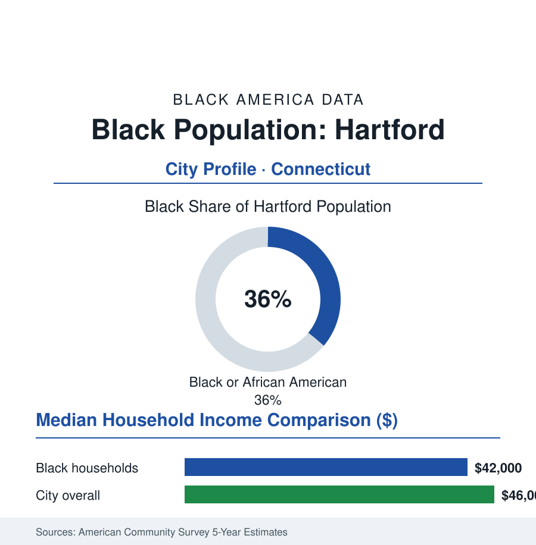

Black Cities
Black Hartford: The North End, the West Indians, and Bloomfield
Hartford is nearly two-fifths Black in the city — about 45,000 residents — with a Caribbean depth rare in New England. The census profile.

Hartford holds about 45,000 Black residents within the city — Black alone or in combination, nearly two-fifths of its 121,000 people, among the highest Black shares of any American state capital — and about 110,000 across the metropolitan area. Two streams built Black Hartford: the Great Migration's tobacco-and-factory road into the Connecticut Valley, and one of America's great West Indian migrations — the Jamaican tobacco workers of the 1940s and the communities that followed — which give this small capital a Caribbean depth no other New England city matches.
The North End and Albany Avenue
The community's geography is the North End: the Albany Avenue corridor through Upper Albany and Clay Arsenal — the commercial spine of Black Hartford for three generations, its storefront churches, Caribbean groceries, and roti shops marking the dual heritage on a single street — the Blue Hills neighborhood at the city's northwest (Hartford's middle-class Black district, its name now also the suburb beyond), and the Northeast and Behind-the-Rocks districts completing the in-city map. The suburbs write the section's most distinctive file: Bloomfield, directly northwest, is a majority-Black suburb of long standing (the metro's Black professional class's chosen ground — its data among the strongest suburban profiles in New England), with Windsor and West Hartford holding substantial communities and East Hartford's Pratt & Whitney workforce anchoring the east bank. The Sanford-and-Son geography of the old tobacco valley — the shade-tobacco farms of the Connecticut River towns that first drew Jamaican seasonal workers in the war years — underlies the whole settlement like a watermark.
Insurance Desks, Jet Engines, and the State
Hartford calls itself the insurance capital, and its Black workforce runs the industry's operations at capital scale (the Hartford, Travelers' and Aetna's — now CVS's — claims and service floors) beside the state's largest employer cluster: state government itself, the hospital systems (Hartford Hospital, Trinity's Saint Francis), Pratt & Whitney's East Hartford jet-engine plants (the metro's industrial anchor, its machinist workforce a Black skilled-trades file of three generations), and the universities (Trinity College, UConn's Hartford campus, Capital Community College — whose nursing program is one of the city's great mobility machines). The indicators describe the capital-city split the section knows well: the city's own poverty rate among the nation's highest for a place its size, its suburbs' Black incomes among New England's best, and the line between them drawn at the town borders the region's famous fragmentation maintains — Connecticut's 169 towns make Hartford's metro the most municipally divided in this section, and its school and housing data are that division's ledger.
The West Indian Capital
Hartford's distinction is its Caribbean data: the Jamaican-born and Jamaican-ancestry population is proportionally among the largest in the United States — the West Indian Social Club (founded 1950, still the community's hall), the Caribbean American Dance Company, the West Indian Independence Celebration (one of the nation's oldest Caribbean parades, a summer fixture since the 1960s), and the Albany Avenue retail of jerk houses, bakeries, and record shops record it on the street. The stream began with the tobacco program's wartime farmworkers — men who wintered, settled, and sent for families — and compounded through the post-1965 migration, producing a Black Hartford that is substantially an immigrant city: its churches worship in the Caribbean's cadences, its politics carry the diaspora's issues, and its school data enroll one of the most Caribbean student bodies in America. The older African American layer — the North End's Great Migration families, the AME Zion and Baptist congregations of the nineteenth-century community (Hartford's Black history reaches to the Amistad's aftermath in nearby Farmington) — shares the district with the newcomers in the layered pattern of the immigration files.
Change and the Estimates
The estimates show the metro's Black population growing through its suburbs — Bloomfield's majority deepening, Windsor and Manchester gaining — while the North End holds its population through the avenue's reinvestment cycles (the streetscape and small-business programs, the artists' and cultural district initiatives) and the city's overall count stays flat in the Connecticut pattern. The school file (Hartford's magnet system — the Sheff settlement's legacy, a regional magnet network built to integrate across the town lines, its lottery data an annual regional ritual) is the metro's defining education experiment and its Black families' central strategic terrain.
Reading the Hartford Numbers
Hartford is the capital-Caribbean profile: 45,000 people in a small, poor city ringed by the Black suburban success of Bloomfield, speaking in two of the diaspora's accents at once. Its numbers are modest and its structure is a seminar — in how a migration of farmworkers became a metropolitan fact, and how the town line became the region's most important statistic.
More in Black Cities
Black Atlanta: Population, Distribution, and Growth of a Black Metropolis
Metro Atlanta holds more than two million Black residents — roughly one in three, second only to New York. The suburban distribution, migration history, and composition of Black Atlanta in the census data.
Black New York: The Largest Black Population in America
The New York metropolitan area holds about 3.4 million Black residents — more than any metro in the nation — and the city itself about two million. The census profile.
Black Washington: The District and the Metro
The Washington metro holds about 1.6 million Black residents, and the District itself — long a majority-Black city — now records a Black share near 41 percent. The census profile.
Source: U.S. Census Bureau, 2020 Census; American Community Survey; Population Estimates Program.